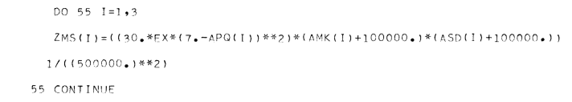
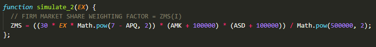
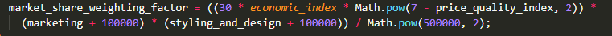
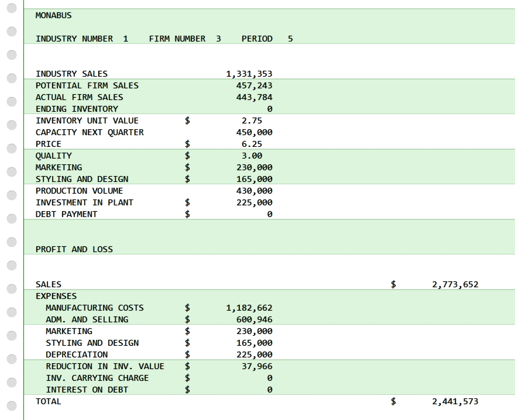
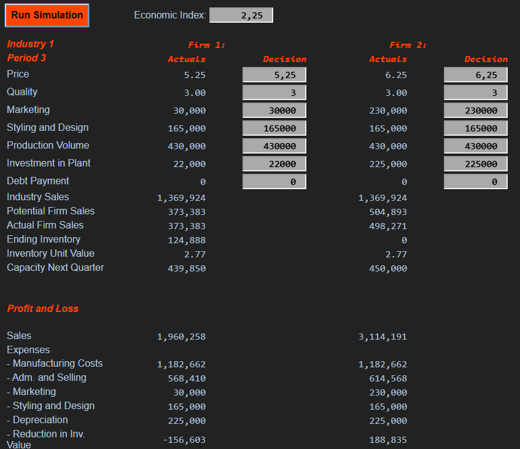

In 1966, Walter Lewis Brown wrote his master's thesis at the University of Montana, in which he describes his management game MONABUS. The exact citation is:
Brown, Walter L., MONABUS - A Business Simulation Exercise, Master's thesis, University of Montana, USA, 1966.
The thesis describes a very nice and simple round-based management game, where three teams of students can make key decisions, like production volume, selling price etc., for the next time period for their respective firms. The game administrator then feeds punch cards with these decision parameters into the computer (an IBM 1620 back in 1966), which then simulates their consequences on the market and for the three companies. The outcome is a printout with financial statements and market data for the firms. The paper is handed over to the student teams as the basis to prepare their decisions for the next period.
The thesis is nicely built-up. It contains an introduction, a manual for the participants, a manual for the game administrator, decision forms, and instructions for the operating staff of the computer center. Of course, the students were usually not allowed to directly operate the computer by themselves back then :-/
I can tell you, that it is quite fun to play this kind of games. I had the pleasure to participate in such a game at my university back in the 1980s. It was called MARKSTRAT (which still exists today), also ran on an IBM machine (a 4331 mainframe), and, even if it was twenty years later, we as students still had no access to the machine itself, but just received paper printouts. I bet, the administrator even fed our decisions into the machine via punch cards (the virtual ones, though, which VM/SP, our IBM's operating system, emulated as part of its virtual machine engine).
Walter's MONABUS thesis luckily also contains the complete listing of his computer program written in the programming language FORTRAN. This is my translation of the original program to JavaScript. I made two versions. One, in which I tried to keep the code and the input and output as similar as possible to the original, and a second one, where I tried to keep the program semantically equal to the original code, but "modernized" it a little bit in the code, by having long variable names, and in the output for the browser. It is quite hard to beat the standard parameter setup, actually.
To make the translation process a little bit clearer, you see in the following a code segment in FORTRAN and its representation in JavaScript:



You can try out the game directly in your browser here:
I also published the complete source code of my JavaScript program on GitHub.
And here are two screen shots:

